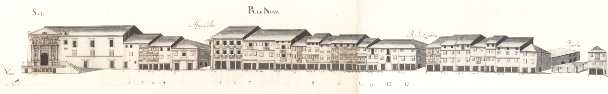

Rua Nova (Página 2)
Rua Nova - vista norte. 
Rua Nova - vista sul. Informações sobre a rua:
Eixo fundamental da cidade, na sequencia da "rua do Souto", define com ela a metade Norte e a metade Sul de "Braga".
Alargada no tempo de D. Diogo de Sousa,
ligava a "rua do Souto" com o "Campo das Hortas", através de uma abertura, feita nessa data na muralha, a "Porta Nova". Esta porta viria a ser alterada na sua
arquitectura, em 1772, segundo um desenho atribuído a André Soares.
Rua de primordial importancia, nela se situava, de Este para Oeste, a "igreja da Misericórdia",
a "casa brasonada de familiares de D. Jorge da Costa",cardeal de Alpedrinha e uma fonte (aberta por D. Diogo de Sousa e reconstruida por D. Frei Agostinho de Jesus).
Mais importante ainda e o facto de ser por esta rua que os novos Arcebispos faziam a sua entrada solene na cidade sempre corn grande pompa e festejos.
0 Mappa mostra-nos uma rua repleta de gelosias, uma forma de fechar as janelas e portas de varandas muito comuns (das casas da burguesia comercial?)-,bastantes
edifícios de três pisos e algumas mesmo de quatro; e muitas com varandas.
No extremo so ficava um pequeno mercado coberto, a "Pracinha", espaço aberto tambem por
D. Diogo de Sousa, que ao longo dos tempos, e ate 1750, teve os nomes de "praça da Hortalice", "praça do Pescado" e "praça do Pão", designações que mostram bem a
actividade economica que nela se praticava.
Uma significativa perda de importância comercial e social deverá ter acontecido a partir da data de mudança do "centro
comercial da cidade", da zona da "Sé" para a da "Arcada".
A "rua Nova" corresponde hoje exactamente à "rua de D. Diogo de Sousa"; a "Pracinha" mantém também o tradicional
sentido toponímico, com o nome de "praça Velha". Com 27 casas de cada lado pertenciam ao Cabido 13 do lado Norte e 1 do lado Sul.
Hoje esta rua mantém ainda muitas
das casas que apresentava em 1750. As que foram alteradas correspondem, porém, a uma tipologia de pisos e aberturas de fachada semelhantes; só as gelosias
desapareceram integralmente. A fonte foi tapada em finais do seculo passado.
A "Pracinha" viu os seus edifícios crescer em altura, sobretudo do lado Este e o mercado
coberto foi retirado em data que desconhecemos.
Casas
| Descrição |
|
1 -
É morada dos Sacristãos da "Sé". Parte desta casa pertence à obra da "Sé" e a restante
à Irmandade da Misericórdia. A parte da obra da "Sé" confronta, de nascente, com casas da dita Irmandade (antigas
casas foreiras à "Capela da senhora da Glória") e, de poente, com a casa nº2. O prazo
era constituído por casa, com ênxido ao redor da "capela da Senhora da Piedade de Jesus da Misericórdia."
|
| |
2 -
Enfiteuta: João Gomes da Cruz, ourives, e sua mulher, Angélica Maria de Araújo
Foro: 120 reis e 1 galinha
|
| |
3 -
Enfiteuta: Rosa Vitória, viúva de João da Silva
Foro: 70 reis e 2 galinhas
|
| |
4 -
Enfiteuta: Manuel Pereira Tadim
Foro: 50 reis e 1 galinha
Confronta, de poente, com casa que se situa nos "antigos açouges".
|
| |
5 -
Enfiteuta: Teresa Tomásia, viúva de Agostinho Marques da Silva, ourives.
Foro: 200 reais e 2 galinhas
A casa nº6 foi construída depois do ano de 1543. Desde o ano de 1644 que as casas nº7 e 8 da "Rua dos Açougues Velhos", por baixo do nº6.Foi
construída em 1543, em pertenças do prazo da casa nº5. No ano de 1641 foram-lhe unidas as traseiras do nº5 da "Rua dos Açougues Velhos".
|
| |
6 -
Enfiteuta: Teresa Tomásia, viúva de Agostinho Marques da Silva, ourives.
Foro: 50 reis e 1 galinha
A casa nº6 foi construída depois do ano de 1543. Desde o ano de 1644 que as casas nº7 e 8 da "Rua dos Açougues Velhos", por baixo do nº6.Foi
construída em 1543, em pertenças do prazo da casa nº5. No ano de 1641 foram-lhe unidas as traseiras do nº5 da "Rua dos Açougues Velhos".
|
| |
7 -
Enfiteuta: António Fernandes Veloso, ourives de prata, e sua mulher, Assunção Vieira
Foro: 60 reis e 1 galinha
Confronta, de poente, com casa for. ao morgado de "Real".Possui uma porta de serventia para a "Rua dos Açougues Velhos", por baixo do nº6.Foi construída em 1543
, em pertenças do prazo da casa nº5.No ano de 1641 foram-lhe unidas as traseiras do nº5 da "Rua dos Açougues Velhos".
|
| |
8 -
Enfiteuta: Vid. casa nº32, Rua de Maximinos(rua nº22).
Foi construída, depoisde 1707, no lugar de uma cozinha pertencente ao nº10, ao qual paga, de pensão ou foro, 60 reis. Confronta, do nascente, com o nº8 e , de poente, com parte da casa nº10. É subenfiteuta Bento de Sá, casado com Francisca da Silva .
|
| |
9 -
Enfiteuta: Vid. casa nº10.
Foi construída depois de 1725, no lugar de uma cozinha pertencente ao nº10, ao qual paga, de pensão ou foro, 60 reis.Confronta, do nascente, com o nº8 e, de poente, com parte da casa nº10. É subenfiteuta Bento de Sá, casado com Francisca da Silva.
|
| |
10 -
Enfiteuta: Luísa da Rocha
Foro: 260 reis e ...galinhas
Parte desta casa é foreira à "Mitra".
Confronta, de nascente, com a parte da "Mitra".
|
| |
11 -
Enfiteuta: Lic.Custódio de Azevedo Proença
Foro: 340 reis e galinhas
Encontram-se unidas desde o ano de 1692
|
| |
12 -
Enfiteuta: Lic.Custódio de Azevedo Proença
Foro: 420 reis e 2 galinhas
Encontram-se unidas desde o ano de 1692
|
| |
13 -
Enfiteuta: Lic. Henrique Ferreira Carmo
Foro: 300 reis e 2 galinhas
Confronta, de poente, com a "Rua dos Sapateiros".
|
| |
14 -
Enfiteuta: Vid. casa nº1 da Rua do Campo(rua nº1).
Foi construída, depois do ano de 1719, numa parte da casa nº15 e no lugar de uma cozinha do nº1 da "Rua do Campo", às quais paga, de pensão ou foro, respetivamente, 200 reis e 1 galinha, e 110 reis. São subenfiteutas André Carvalho, tratante, e sua mulher, Luisa da Costa.
|
| |
15 -
Corresponde ao nº1 da "Rua do Campo", para onde se tem a fronteira e serventia principais.A frontaria que dá para a "Rua Nova de Sousa" é foreira, à comenda de "S. Pedro de Merelim".
|
|